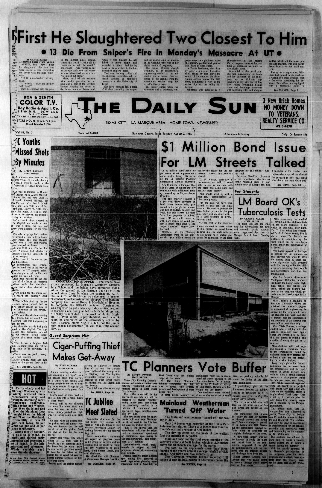

HN HN-657 · August 2, 1966 · Crime, Law & Justice > Murders & Assassinations > Mass killings
Source: The Daily Banner, p. 1 — original page; University of Texas, victims of the tower tragedy.
Report: “Crazed Texas Sniper Kills 15†described a student gunman's firing from the University of Texas tower on August 1, striking people across the Austin campus.
Assessment: The attack is established; the number is a contemporaneous tally, not a standardized final victim count. University commemorations and later histories use differing totals depending on whether they count those killed before the tower attack, an unborn child, or a victim who died long afterward. The gunman was Charles Whitman. Neither the headline's language nor its early count establishes motive or a definitive casualty boundary.
Authentic scans retrieved from The Portal to Texas History (University of North Texas). Article crops are located using the archive's own OCR word coordinates and rendered at native crop resolution; page scans are reduced-size access renditions. No images were generated, mocked, or retouched.

Not yet acquired. Queued for provider-specific acquisition testing (see source-acquisition manifest).
URL (preserved verbatim): https://newspapers.library.in.gov/?a=d&d=TDB19660802-01.1.1
Saved research report: Historical_Newspaper_Event_Research_653-677_2026-10-23.md
Evidence note: A newspaper report means a historical publication made a claim; it does not establish that claim as fact. Contemporary reporting is separated from later scholarly context and our own assessment.